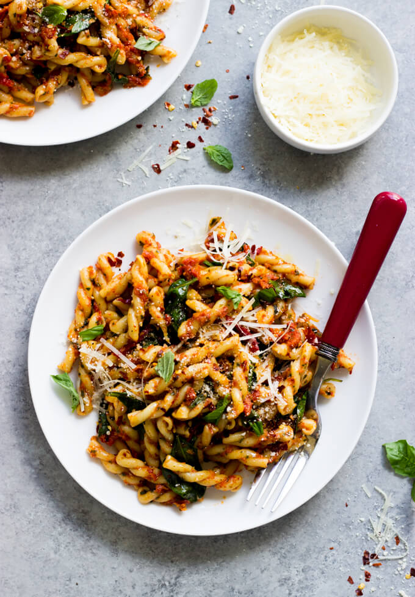
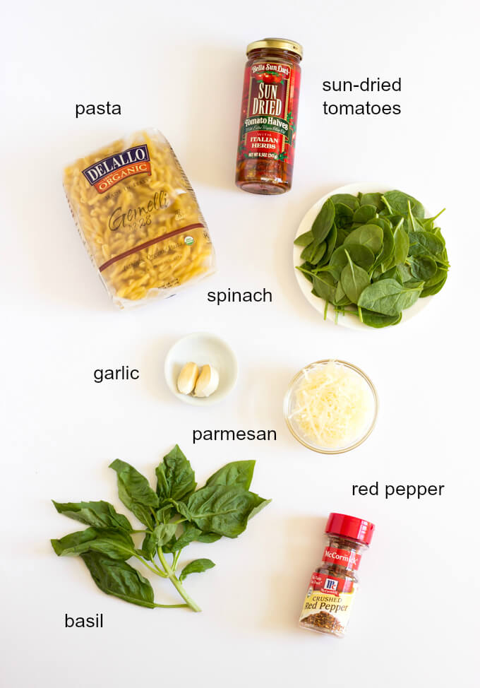
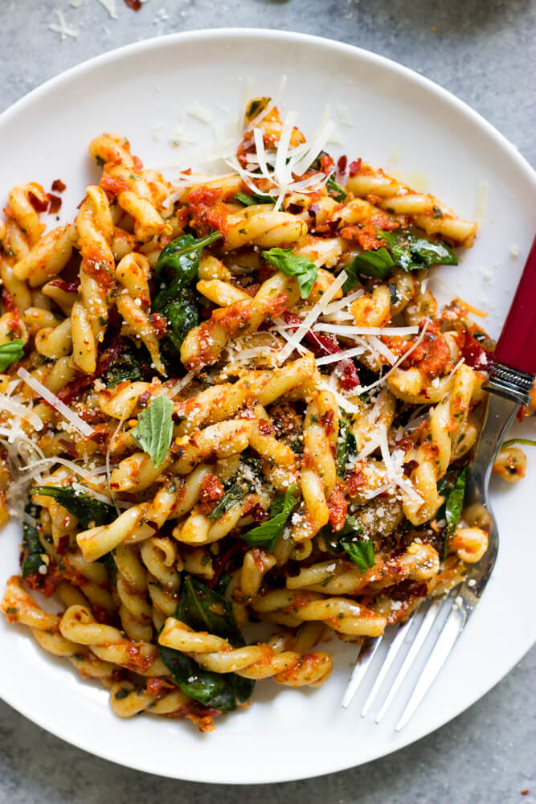

20-MINUTE SUN-DRIED TOMATO PASTA WITH SPINACH
September 5, 2019 By Nihaarika
Flavour loaded 20-minute pasta with sun-dried tomato pesto and fresh baby
spinach is SO easy to make!

INGREDIENTS FOR SUN DRIED TOMATO PASTA RECIPE
I was not joking when I said this meal is easy! You literally need 7-ingredients total
and you are good to go.
- Pasta: your favorite short shaped pasta!
- Sun-Dried Tomatoes: the ones in oil, you will use that yummy flavored oil in pesto.
- Fresh basil: or arugula (see below for pesto variations)
- Garlic
- Red pepper flakes
- Baby spinach
- Parmesan cheese: preferably freshly grated

DIFFERENT WAYS TO MAKE PESTO
Think beyond basil and Parmesan cheese. Best part about pesto is that it can be
made variety of ways.
- Greens: instead of basil, try adding tender greens such as arugula, parsley, or mint.
- Cheese: Pecorino Romano, aged Asiago or manchego cheese are all hard and
salty cheeses suitable for pesto.
- Nuts: add in your favorite nuts, such as almonds, pumpkin seeds, or pine nuts.
Just make sure to buy roasted nuts or roast them yourself. It will add delicious rich
flavour to the pesto.
- Few Other Things: fresh lemon juice, lemon zest or balsamic vinegar is great for
brightening up the pesto. Also to switch up the flavors, consider adding jarred
artichokes or olives.
HOW TO MAKE SUN-DRIED TOMATO AND SPINACH PASTA
You will need a food processor or high-powered blender for the pesto and a large
pot for cooking the pasta.
- Step 1: Before you get going on the pesto, cook the pasta. Read the back of the
box for specific directions. But basically, you will want to cook the pasta in salted
water until al dente. Cooking time will depend on the type of pasta used.
- Step 2: While the pasta is cooking, in a food processor, pulse the tomatoes and
their oil until chopped. Add garlic, basil, and red pepper flakes, and pulse until
the mixture resembles paste like consistency. Don not forget to season with salt and pepper.
- Step 3: When pasta is ready, reserve 1 cup of cooking liquid and drain the rest.
- Step 4: Return the pasta back to heat and add spinach, sun-dried tomato pesto,
and reserved cooking liquid. Stir until the spinach has wilted. Add Parmesan
cheese and taste for salt and pepper. Serve with additional Parmesan cheese
and fresh basil.
PASTA MIX-IN IDEAS
Once you have this recipe down, you can spruce it up even further with these
additional mix-ins:
- Seafood: scallops, shrimp, or salmon
- Chicken: any type of chicken works!
- Veggies mushrooms or broccolini
- White beans

BACK TO: CILANTRO LIME CHICKEN WITH AVOCADO SALSA